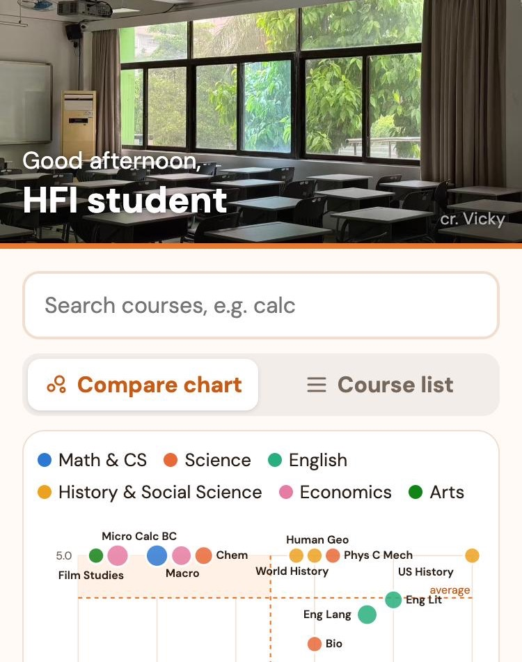
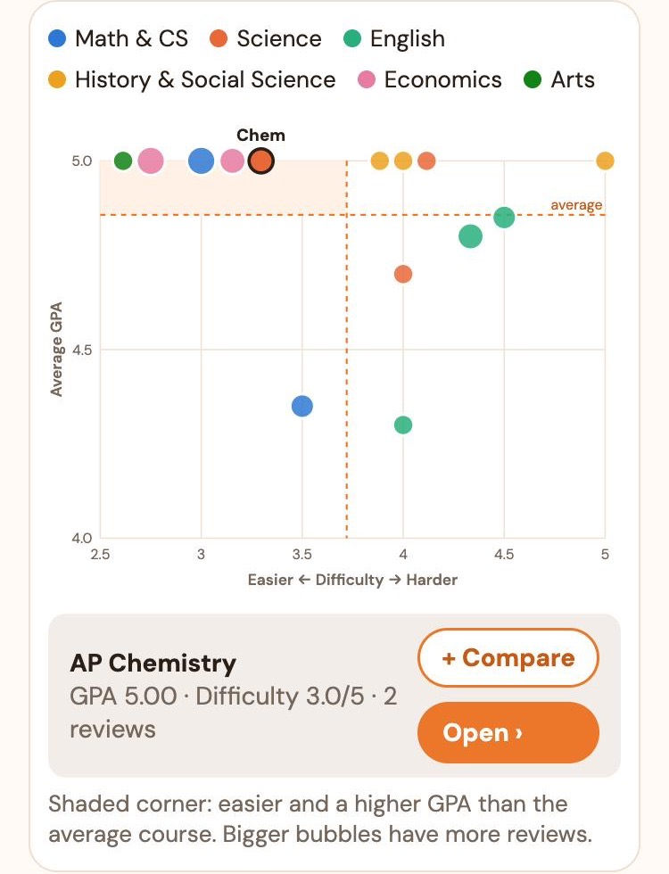
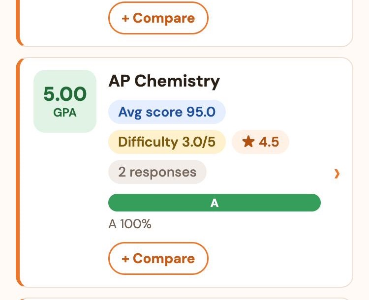
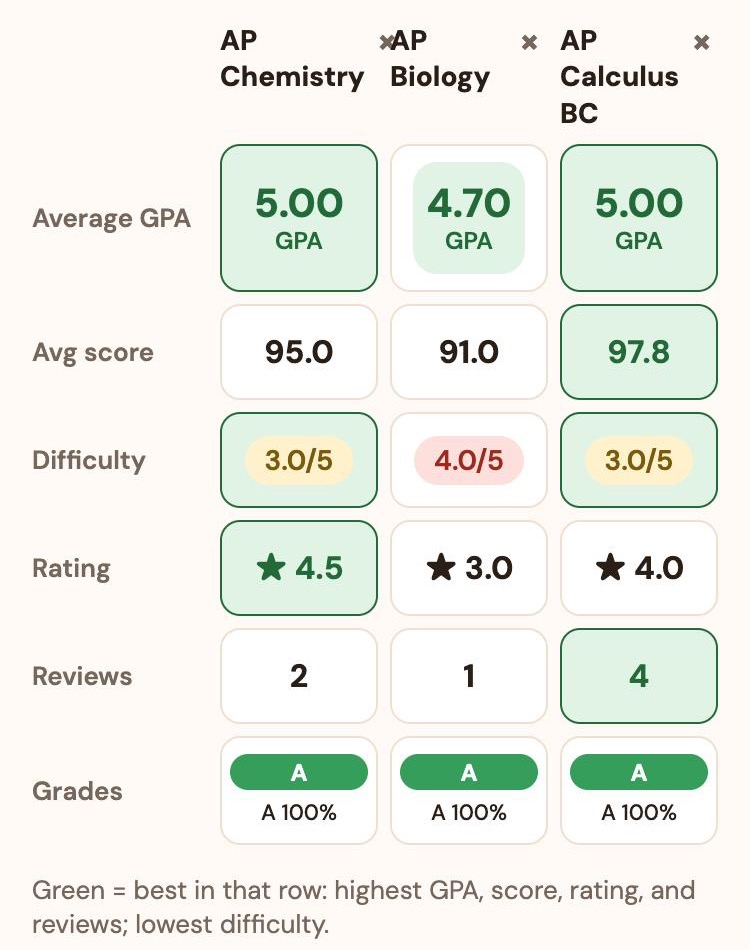
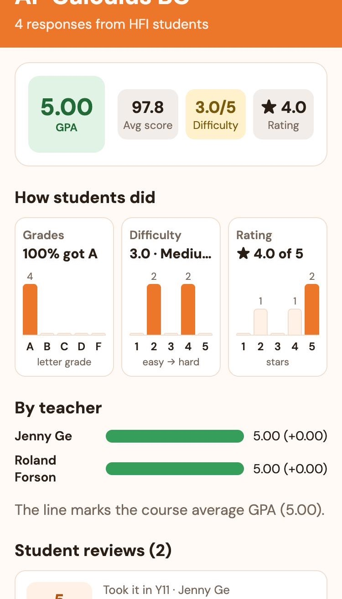
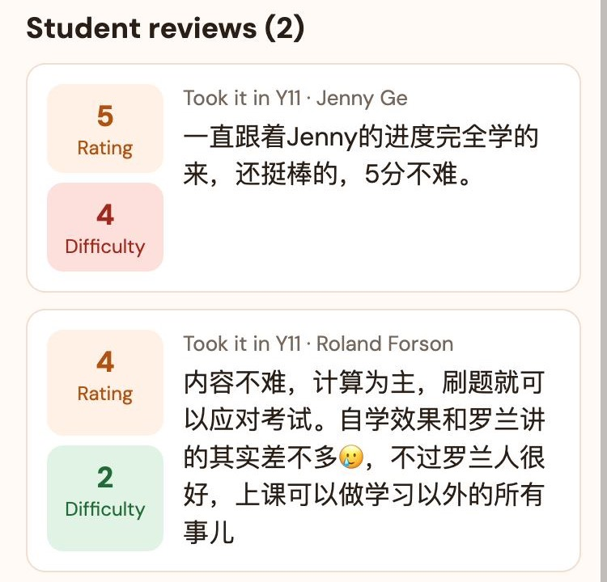
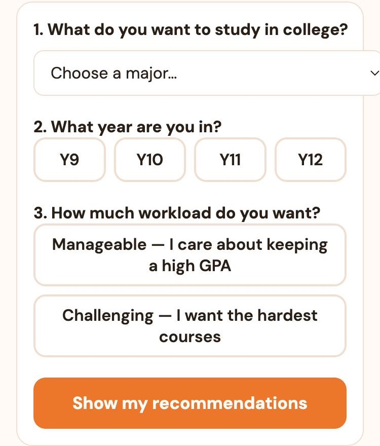
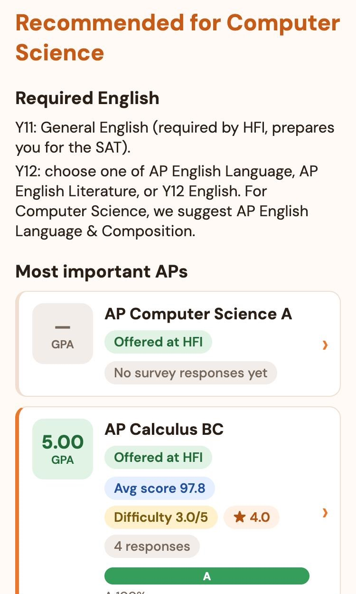
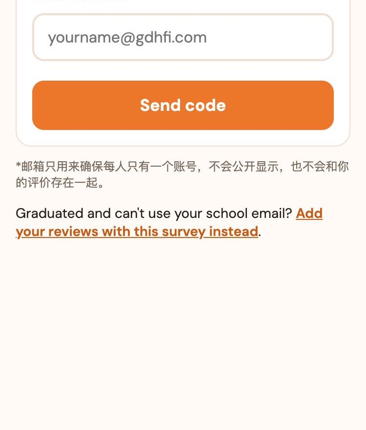

1. 首页：Courses

- 顶部的照片是同学投稿的 HFI 照片，每天换一张，右下角是拍摄者。
- 问候语会按时间变化；登录后会显示你的名字。
- 在 Search courses 里输入课程名就能筛选，例如输入 "calc" 找到微积分。
- 下面可以在 Compare chart 和 Course list 两种显示方式之间切换。
2. Compare chart（所有课程一张图）

- 每个圆点是一门课。为了不显得乱，平时不显示课程名。
- 左右 = 难度：越靠左越简单，越靠右越难。
- 上下 = 平均 GPA：越靠上 GPA 越高（满分 5.0）。
- 颜色 = 科目，见图上方的颜色说明；圆点越大，评价越多，数据越可靠。
- 两条橙色虚线是所有课程的平均难度和平均 GPA。左上角的浅橙色区域是"比平均更简单、GPA 又更高"的课。
- 点一下圆点：上方会出现课程名，图下方显示这门课的 GPA、难度和评价数量（电脑上把鼠标移上去也可以）。
- 再点一下同一个圆点，或者点 Open ›，打开这门课的详情页；点 + Compare 把它加入对比。
3. Course list（课程卡片）

- 左边的方块是平均 GPA：绿色 4.5 以上，黄色 3.7–4.5，红色 3.7 以下。
- Avg score 是平均期末成绩（满分 100）；Difficulty 是难度（1 很简单，5 很难）；★ 是综合评分（满分 5）。
- 彩色长条显示拿到 A、B、C、D、F 的同学各占多少。
- 用 Sort by 排序，比如 "Easiest first" 把最简单的课排在最前面。点卡片进入详情页。
- 点 + Compare 把这门课加入对比（见下一节）。
4. 对比课程：Compare

- 在课程卡片或气泡图里点 + Compare，最多选 3 门课。选中后按钮会变成橙色的 "✓ Comparing"。
- 屏幕底部会出现一条深色的栏，点 Compare › 打开对比页；点 Clear 全部清空。
- 对比页里每门课一列，每一行比较一项。绿色的格子是这一行最好的：GPA、平均分、评分、评价数量越高越好，难度越低越好。
- 点课程名进入详情页，点 × 去掉这门课。对比页的链接可以直接发给朋友。
5. 课程详情页

- 最上面是这门课的平均 GPA、平均分、难度和评分。
- How students did：三个小图显示成绩、难度、评分的分布。橙色的柱子是选的人最多的。
- By teacher：每位老师学生的平均 GPA；"+0.00" 表示比这门课的平均高或低多少。

- Student reviews：同学写的文字评价，左边是他们给的评分和难度。
- 页面最下面的 Review this course → 可以直接评价这门课。
6. Recommender（AP 推荐）

- 选择你大学想读的专业。
- 选择你现在的年级。Y9、Y10 的同学会看到 Y11–Y12 的选课计划。
- 选择工作量：Manageable 会推荐轻松一点的课（比如用 Physics 2 代替 Physics C）。
- 点 Show my recommendations。

- Required English：学校规定必须上的英语课。
- Offered at HFI 是学校开的课，下面有同学们的评分；Self-study 是学校不开、需要自学的课，下面有学习资源链接。
- 大多数同学每年在学校上 3–4 门 AP，挑最适合你的就好。
7. 写评价：Me

- 点底部的 Me，输入你的 @gdhfi.com 学校邮箱，点 Send code。
- 去学校邮箱收验证码（没收到的话看看垃圾邮件），填进去点 Sign in。只需要登录一次。
- 点 Add a review，选课程、年级、老师，填成绩、难度、评分，也可以写几句评价。
- 每门课只能评价一次。Me 页面会列出你评价过的课。
已经毕业、不能用学校邮箱？在 Me 页面点问卷链接填写。
右上角的 Auto / Light / Dark 可以切换白天、黑暗模式；Auto 会在晚上 7 点到早上 7 点自动变暗。
8. 隐私与审核
- App 只显示平均值，永远不会显示任何一个人的分数。
- 邮箱只用来保证一人一个账号，不会和你的评价存在一起，谁也看不到是谁写的。
- 所有评价都要经过审核才会显示，一般一周以内，这样可以防止有人恶意刷分。